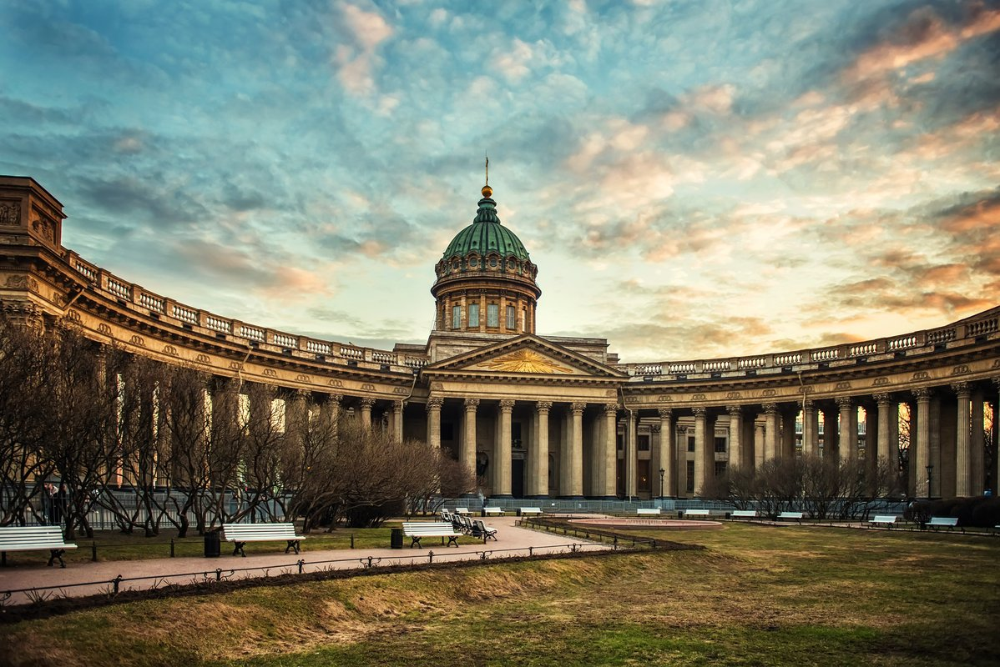

Имперский Петербург
Санкт-Петербург — это город дворцов. XVIII и XIX века подарили нам уникальное сочетание стилей: от пышного Елизаветинского барокко до строгого Классицизма. Каждый камень здесь хранит память о великих императорах и гениальных зодчих.
Зимний Дворец
Главная резиденция российских императоров. Архитектор Бартоломео Растрелли создал шедевр, в котором 1084 комнаты и 1945 окон. Это не просто здание, это сердце русского барокко, воплощение роскоши и могущества империи.
Архитектурная симфония
Гранитные набережные, прямые проспекты и огромные площади — город проектировался как идеальное пространство для демонстрации имперской мощи. Исаакиевский собор, Казанский собор и здание Главного штаба формируют тот самый узнаваемый облик «Северной Пальмиры».

